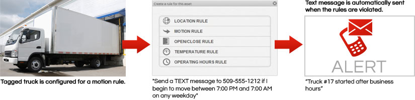
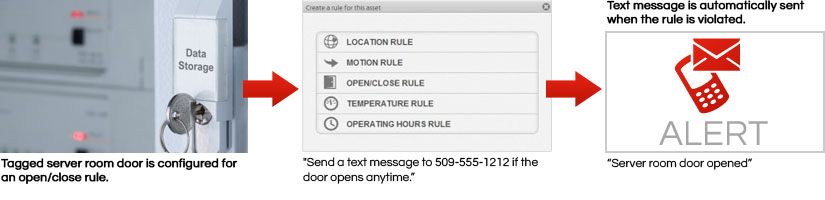
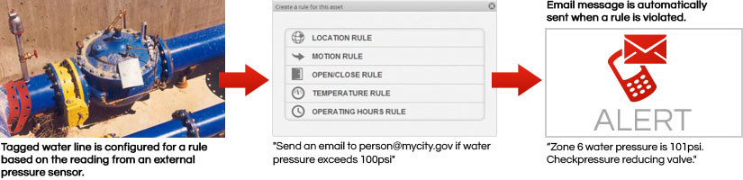

The real power of the RECON solution is unlocked by combining the ability of the Asset Tags to sense and report events and data, with special rules that you create for them. Read on for more details about leveraging these functions to make your equipment and machines smarter.
Vibration & Motion
Asset tags can detect even slight motion and vibration. Knowing when an asset begins to move or when a motor starts can help you detect and prevent theft or alert you to a critical event. Knowing the accumulated run-time of a motor can help you keep track of equipment service needs. Here are a few common applications:
- Monitor tools left overnight at the jobsite
- Receive an alert when a vehicle is started after hours
- Track needed preventative maintenance by monitoring accumulated run-time of machinery
- Receive an instant alert when a sump pump turns on, notifying you that water has reached a critical level
Sample Scenario
Temperature
Awareness of temperatures can help you avoid costly equipment damage or inventory spoilage. The on-board temperature sensor can detect and report ambient air temperature, and an external temperature probe can be used for other specialized applications. Common uses include:
- Monitoring temperatures in server rooms, elevator machine rooms and storage facilities
- Monitoring HVAC equipment and performance
- Refrigerator or freezer temperatures
- Receive instant alerts when the temperature of a refrigerator or freezer rises, jeopardizing food or drug inventory
- Monitor the temperature of crops after harvest
Sample Scenario

Access
The ability to receive alerts when a door or window opens or when someone passes through a room can help you prevent unauthorized access to restricted areas, or simply make you aware – during the hours you choose – of when an area has been accessed. An asset tag can do this two ways; when attached to a door the tag’s magnetic switch will report the door’s opening or closing, and, when connected to a standard motion detector the tag will send an alert when motion in the area has occurred. Common applications include:
- Monitoring access to restricted areas such as server rooms
- Monitoring after-hours access to a remote shop or office
- Receiving instant alerts when cabinets containing restricted materials, such as drugs or chemicals have been accessed.
Sample Scenario
External Sensors
The ability to remotely monitor other external sensors or meters can save you time and money in data collection costs, and help you to respond to conditions before they become a problem. Virtually any meter or sensor that produces digital output can be paired with an asset tag to report readings to you remotely from the field. Tags can also sense and report any switch open or close events. With these functions you can:
- Remotely read water and gas meters over a wide service area
- Monitor voltage or electrical current and receive an alert if too high or low
- Receive an alert if the level of fluid in a tank or pond has risen or fallen to a specified level
- Monitor air or water pressure
Sample Scenario
Intrigued by the possibilities of the RECON system? Please contact us to discuss what we can do for your business.